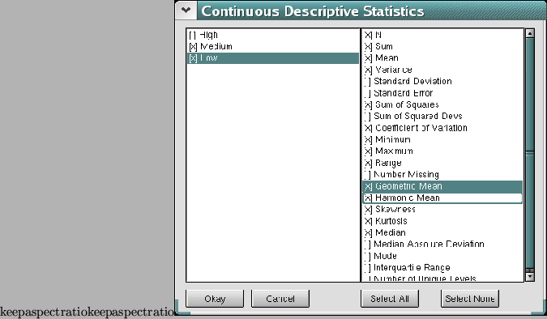

The first stage of analysis once the data have been entered is usually to get some descriptive statistics. In SalStat, this is a very easy process. Once the data are entered into the grid (remember, each condition goes into its own column), go to the menu bar, click on ``Describe'' and select ``Continuous...''.

Descriptive Statistics
A dialog box will appear. On each side, there are two large boxes, and underneath these, there are four buttons (marked ``Okay'', ``Cancel'', ``Select All'', and ``Select None'' from left to right). The big box on the left holds a list of columns. However, it only shows columns that contain data: This is because there is no point in getting descriptive statistics for an empty data set (I can tell you that the N, sum, mean, sample variance and so on will be zero!). If you want descriptive statistics for a column, just click on the small box next to it to select it. Next, you will need to select which descriptive statistics you want. This is where the big box on the right hand side comes in, for it contains a list of statistics that you may want. Of course, it is a long list, and may grow as SalStat develops even further, so to save you time, there are two buttons underneath one of which you can click on to select the lot, the other of which you can click on to deselect them all.
Once all this is done, just click on the ``Okay'' button, and the descriptive statistics will appear in the output window, all in a nice table ready for you to read.